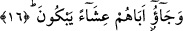
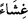

Buraya kadar anlatılanlar Yâkub (a.s.) ve onun imtihan edilmesi ile ilgiliydi. Yûsuf
(a.s.)’a gelince, onun imtihan edilme sebebi olarak şu anlatılmaktadır:
Yûsuf bir gün eline bir ayna alıp kendisine bakınca güzelliği ve yakışıklılığı pek
hoşuna giderek şöyle dedi: “Köle olsam ve beni satsalardı, herhalde paha
biçemezlerdi.”
İşte Yûsuf bu sözünden ötürü kölelikle ve düşük bir fiyata satılmakla imtihan edildi.
Babasından ayrılmasının sebebi de buydu.
Burada bütün cemâl ve kemâlin Allah Teâlâ’ya âid olduğuna işaret edilmektedir.
Bunlar, mecâzen bir kula isnâd edildiğinde, o kulun Allah dışındaki tüm
varlıklardan/mâsivâ âzâd oluncaya kadar çalışması, izâfetlerden ve kayıtlardan
kurtulmaya gayret etmesi, her şeyi Allah’tan bilmesi ve Allah’ın tam ve gerçek bir kulu
olması gereklidir.
Molla Câmî der ki:
Efendilerin elbisesi ve pâdişahların hil‘ati neye yarar?
O kimse ki kölelik örtüsü omuzu üzerindedir.
Hülâsa bu tasfiye/arınma yolu, zor bir yoldur. Edeb ve mihnet de onun
sebeplerindendir. “Bana eziyet edildiği gibi hiçbir peygambere eziyet edilmedi.”[17]
Yâni benim arındırıldığım kadar hiçbir peygamber arındırılmadı, mânâsındaki hadis bu
sebeple vârid olmuştur.
Bu yüce yolda çekilen zerre miktarı mihnet bir çok keşf ve kerâmetten daha üstündür.
Allah Teâlâ kendi zatı ve kendine kulluk için seçtiği kişiler hariç hiçbir kimseyi
arındırdığı kişiler (asfiya) kadar belâ ve mihnete sokmamıştır. Bunu anla. Hakîkatlere
ileten sâdece Allah’tır.
16. Akşamleyin ağlayarak babalarına geldiler.
“Akşamleyin” yani gündüzün sonunda “ağlayarak” yani ağlıyormuş gibi yaparak
“babalarına geldiler.” Âyetteki “__WORD__” lafzı, gündüzün sonundan gece yarısına kadar
olan zaman dilimidir. Ebü’l-Leys Tefsiri’nde ikindiden sonra geldikleri ifade
edilmektedir. el-Kevaşî’de ise şöyle der: “Bir mazeretleri bulunduğunu en güzel bir
şekilde anlatabilmek için akşamleyin geldiler.”
Rivâyet edilir ki bir kadın, kocasıyla anlaşmazlığa düşerek Kadı Şüreyh’in huzuruna
çıkar. Bu esnada ağlamakta olduğu için Şa‘bî, Kadı’ya:
–“Ey Ebû Ümeyye, sanırım bu kadına haksızlık edilmiş, nasıl ağladığını görmez
misin.” dedi. Bunun üzerine Şüreyh şöyle dedi: